Introduction
CiteFuse is a computational framework that implements a suite of methods and tools for CITE-seq data from pre-processing through to integrative analytics. This includes doublet detection, network-based modality integration, cell type clustering, differential RNA and protein expression analysis, ADT evaluation, ligand-receptor interaction analysis, and interactive web-based visualisation of the analyses. This vignette demostrates the usage of CiteFuse by using a subset data of CITE-seq data from human PBMCs as an example (Mimitou et al., 2019).
First, install CiteFuse using BiocManager.
if (!requireNamespace("BiocManager", quietly = TRUE)) { install.packages("BiocManager") } BiocManager::install("CiteFuse")
## [1] "RNA" "ADT" "HTO"lapply(CITEseq_example, dim)
## $RNA
## [1] 19521 500
##
## $ADT
## [1] 49 500
##
## $HTO
## [1] 4 500Here, we start from a list of three matrices of UMI, ADT and HTO count, which have common cell names. The preprocessing function will utilise the three matrices and its common cell names to create a SingleCellExperiment object, which stores RNA data in an assay and ADT and HTO data in altExp slot.
sce_citeseq <- preprocessing(CITEseq_example) sce_citeseq
## class: SingleCellExperiment
## dim: 19521 500
## metadata(0):
## assays(1): counts
## rownames(19521): hg19_AL627309.1 hg19_AL669831.5 ... hg19_MT-ND6
## hg19_MT-CYB
## rowData names(0):
## colnames(500): AAGCCGCGTTGTCTTT GATCGCGGTTATCGGT ... TTGGCAACACTAGTAC
## GCTGCGAGTTGTGGCC
## colData names(0):
## reducedDimNames(0):
## altExpNames(2): ADT HTO
Detecting both cross- and within-sample doublets using CiteFuse
HTO Normalisation and Visualisation
The function normaliseExprs is used to scale the alternative expression. Here, we used it to perform log-transformation of the HTO count, by setting transform = "log".
sce_citeseq <- normaliseExprs(sce = sce_citeseq, altExp_name = "HTO", transform = "log")
Then we can perform dimension reduction on the HTO count by using runTSNE or runUMAP, then use visualiseDim function to visualise the reduced dimension plot.
sce_citeseq <- scater::runTSNE(sce_citeseq, altexp = "HTO", name = "TSNE_HTO", pca = TRUE) visualiseDim(sce_citeseq, dimNames = "TSNE_HTO") + labs(title = "tSNE (HTO)")
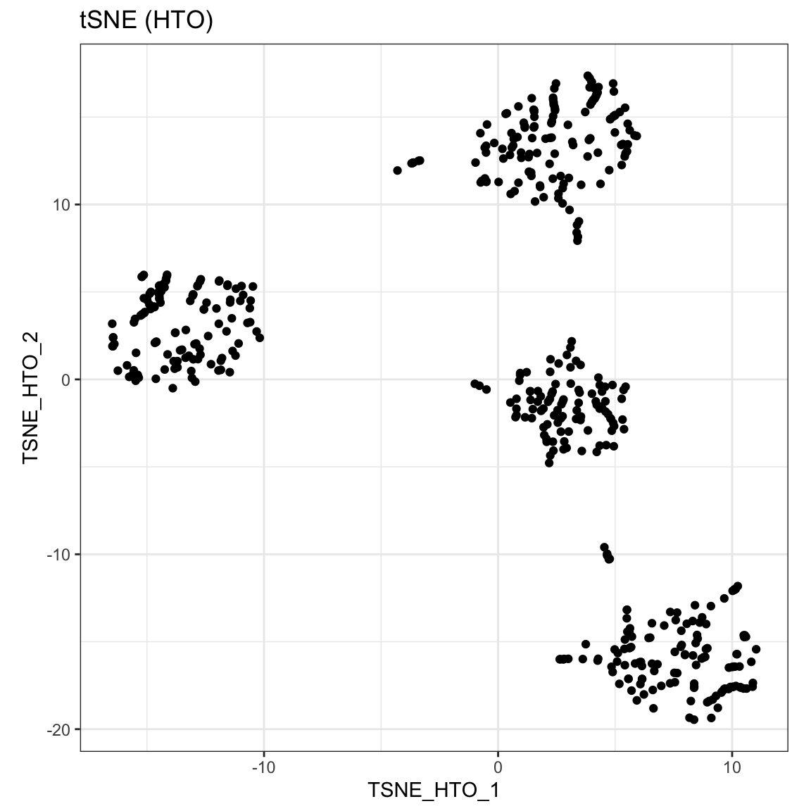
sce_citeseq <- scater::runUMAP(sce_citeseq, altexp = "HTO", name = "UMAP_HTO") visualiseDim(sce_citeseq, dimNames = "UMAP_HTO") + labs(title = "UMAP (HTO)")
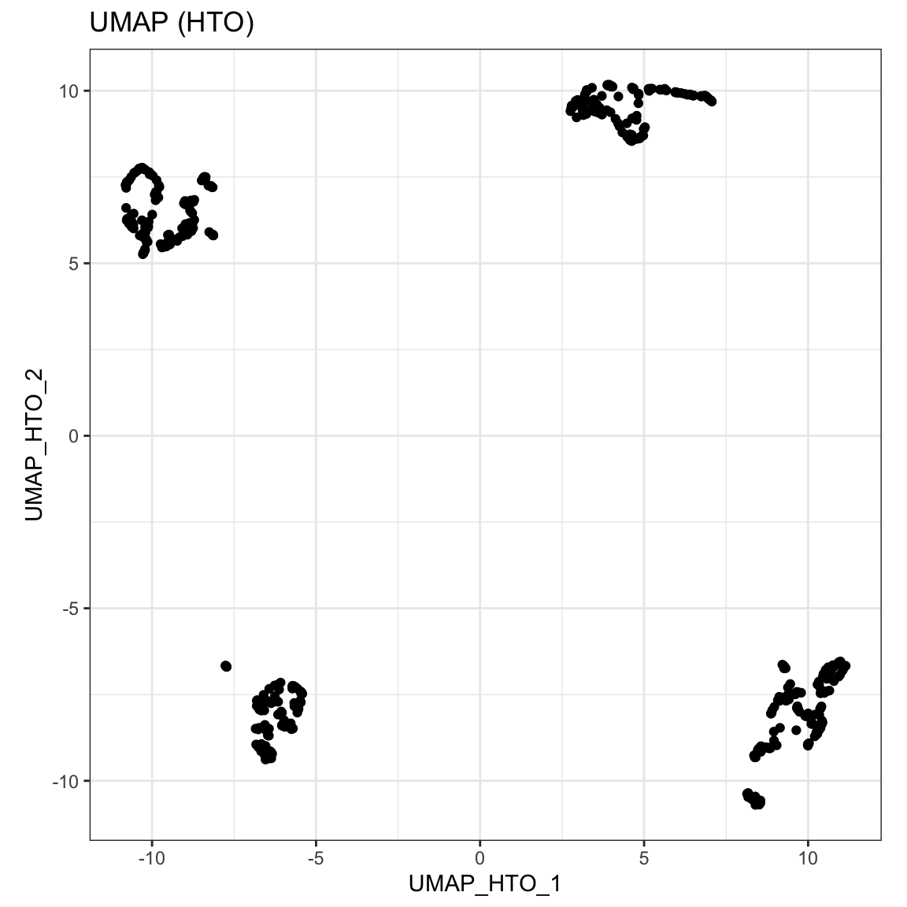
Doublet Identification (cross sample)
We first identify the cross-sample doublets via the crossSampleDoublets function.
sce_citeseq <- crossSampleDoublets(sce_citeseq)
## number of iterations= 20
## number of iterations= 24
## number of iterations= 46
## number of iterations= 50The results of the cross sample doublets are then saved in colData as doubletClassify_between_label and doubletClassify_between_class.
table(sce_citeseq$doubletClassify_between_label)
##
## 1 2 3 4
## 115 121 92 129
## doublet/multiplet
## 43table(sce_citeseq$doubletClassify_between_class)
##
## doublet/multiplet Singlet
## 43 457We can then highlight the cross-sample doublets in our tSNE plot of HTO count.
visualiseDim(sce_citeseq, dimNames = "TSNE_HTO", colour_by = "doubletClassify_between_label")
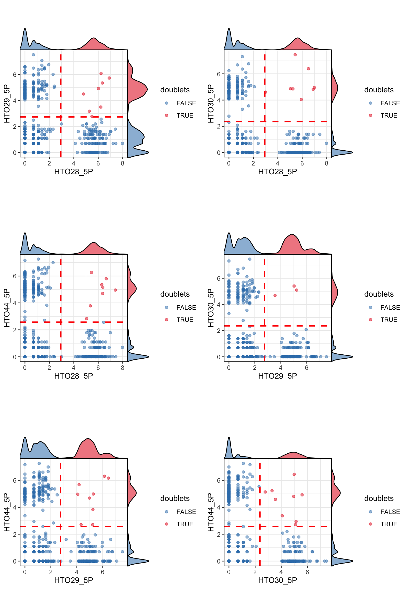
Furthermore, plotHTO function allows us to plot the pairwise scatter HTO count.
plotHTO(sce_citeseq, 1:4)

Doublet Identification (within samples)
We then identify the within-sample doublets via the withinSampleDoublets function.
sce_citeseq <- withinSampleDoublets(sce_citeseq, minPts = 10)
The results of the cross sample doublets are then saved in the colData as doubletClassify_within_label and doubletClassify_within_class.
table(sce_citeseq$doubletClassify_within_label)
##
## Doublets(Within)_1 Doublets(Within)_2 Doublets(Within)_3 Doublets(Within)_4
## 3 7 4 6
## NotDoublets(Within)
## 480table(sce_citeseq$doubletClassify_within_class)
##
## Doublet Singlet
## 20 480visualiseDim(sce_citeseq, dimNames = "TSNE_HTO", colour_by = "doubletClassify_within_label")
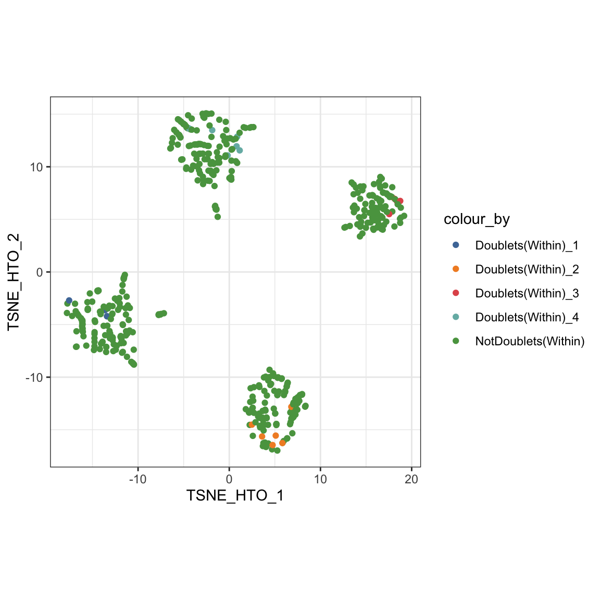
Finally, we can filter out the doublets cells (both within and between batches) for the downstream analysis.
sce_citeseq <- sce_citeseq[, sce_citeseq$doubletClassify_within_class == "Singlet" & sce_citeseq$doubletClassify_between_class == "Singlet"] sce_citeseq
## class: SingleCellExperiment
## dim: 19521 437
## metadata(3): doubletClassify_between_threshold
## doubletClassify_between_resultsMat doubletClassify_within_resultsMat
## assays(1): counts
## rownames(19521): hg19_AL627309.1 hg19_AL669831.5 ... hg19_MT-ND6
## hg19_MT-CYB
## rowData names(0):
## colnames(437): GATCGCGGTTATCGGT GGCTGGTAGAGGTTAT ... TTGGCAACACTAGTAC
## GCTGCGAGTTGTGGCC
## colData names(5): doubletClassify_between_label
## doubletClassify_between_class nUMI doubletClassify_within_label
## doubletClassify_within_class
## reducedDimNames(2): TSNE_HTO UMAP_HTO
## altExpNames(2): ADT HTOClustering
Performing SNF
sce_citeseq <- scater::logNormCounts(sce_citeseq) sce_citeseq <- normaliseExprs(sce_citeseq, altExp_name = "ADT", transform = "log") system.time(sce_citeseq <- CiteFuse(sce_citeseq))
## Calculating affinity matrix
## Performing SNF## user system elapsed
## 2.809 0.117 2.927Performing spectral clustering
SNF_W_clust <- spectralClustering(metadata(sce_citeseq)[["SNF_W"]], K = 20)
## Computing Spectral Clustering
## Computing Diffusion Coordinates
## Used default value: 20 dimensionsplot(SNF_W_clust$eigen_values)
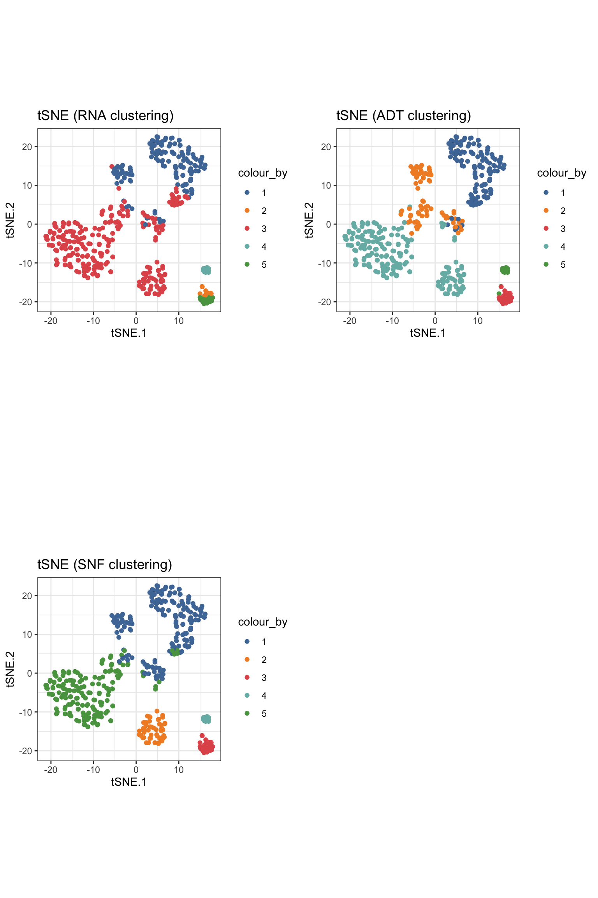
## [1] 5SNF_W_clust <- spectralClustering(metadata(sce_citeseq)[["SNF_W"]], K = 5)
## Computing Spectral Clustering
## Computing Diffusion Coordinates
## Used default value: 5 dimensionssce_citeseq$SNF_W_clust <- as.factor(SNF_W_clust$labels) SNF_W1_clust <- spectralClustering(metadata(sce_citeseq)[["ADT_W"]], K = 5)
## Computing Spectral Clustering
## Computing Diffusion Coordinates
## Used default value: 5 dimensionssce_citeseq$ADT_clust <- as.factor(SNF_W1_clust$labels) SNF_W2_clust <- spectralClustering(metadata(sce_citeseq)[["RNA_W"]], K = 5)
## Computing Spectral Clustering
## Computing Diffusion Coordinates
## Used default value: 5 dimensionssce_citeseq$RNA_clust <- as.factor(SNF_W2_clust$labels)
Visualisation
sce_citeseq <- reducedDimSNF(sce_citeseq, method = "tSNE", dimNames = "tSNE_joint") g1 <- visualiseDim(sce_citeseq, dimNames = "tSNE_joint", colour_by = "SNF_W_clust") + labs(title = "tSNE (SNF clustering)") g2 <- visualiseDim(sce_citeseq, dimNames = "tSNE_joint", colour_by = "ADT_clust") + labs(title = "tSNE (ADT clustering)") g3 <- visualiseDim(sce_citeseq, dimNames = "tSNE_joint", colour_by = "RNA_clust") + labs(title = "tSNE (RNA clustering)") library(gridExtra) grid.arrange(g3, g2, g1, ncol = 2)
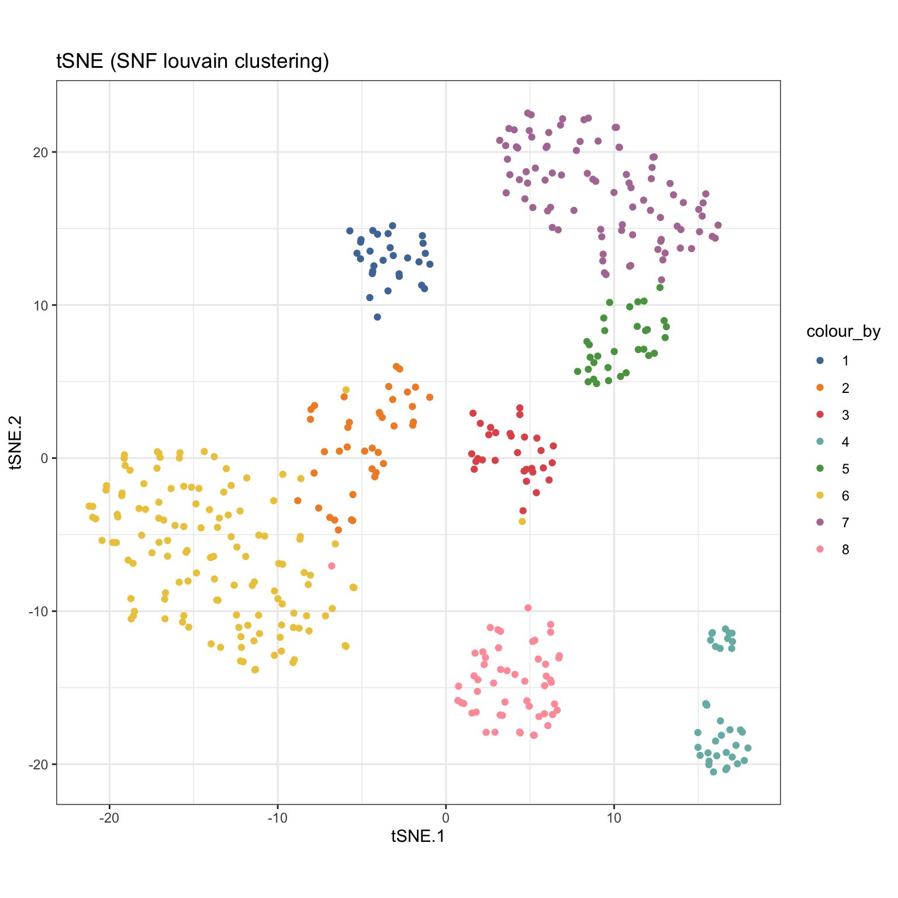
g1 <- visualiseDim(sce_citeseq, dimNames = "tSNE_joint", colour_by = "hg19_CD8A", data_from = "assay", assay_name = "logcounts") + labs(title = "tSNE: hg19_CD8A (RNA expression)") g2 <- visualiseDim(sce_citeseq,dimNames = "tSNE_joint", colour_by = "CD8", data_from = "altExp", altExp_assay_name = "logcounts") + labs(title = "tSNE: CD8 (ADT expression)") grid.arrange(g1, g2, ncol = 2)
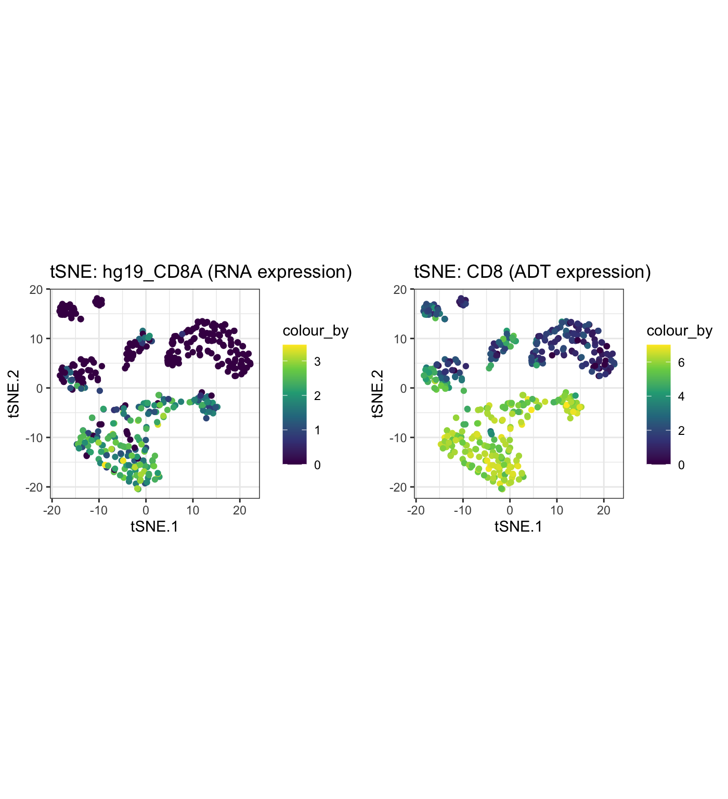
Louvain clustering
SNF_W_louvain <- igraphClustering(sce_citeseq, method = "louvain") table(SNF_W_louvain)
## SNF_W_louvain
## 1 2 3 4 5 6 7 8 9
## 30 38 80 29 90 37 52 29 52sce_citeseq$SNF_W_louvain <- as.factor(SNF_W_louvain) visualiseDim(sce_citeseq, dimNames = "tSNE_joint", colour_by = "SNF_W_louvain") + labs(title = "tSNE (SNF louvain clustering)")
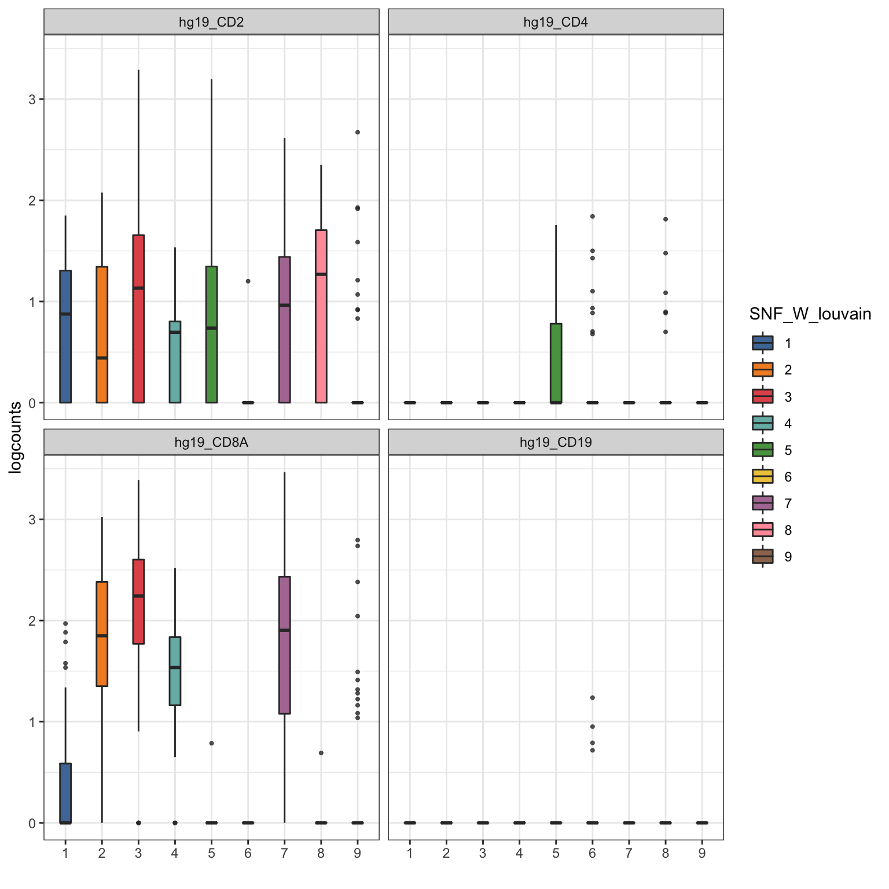
visualiseKNN(sce_citeseq, colour_by = "SNF_W_louvain")
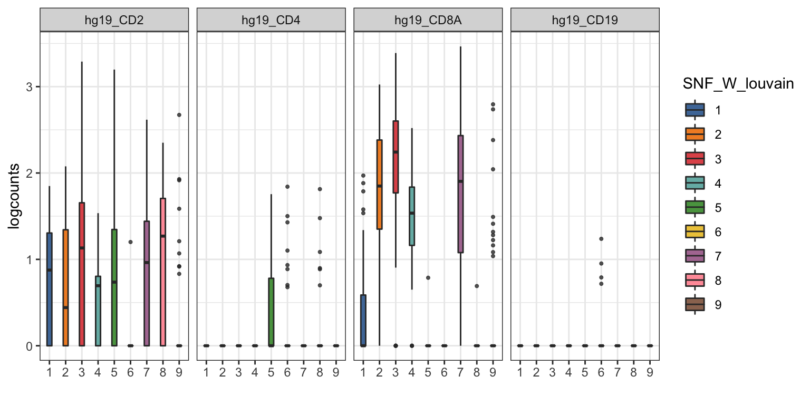
Differential Expression Analysis
Exploration of feature expression
visualiseExprs(sce_citeseq, plot = "boxplot", group_by = "SNF_W_louvain", feature_subset = c("hg19_CD2", "hg19_CD4", "hg19_CD8A", "hg19_CD19"))
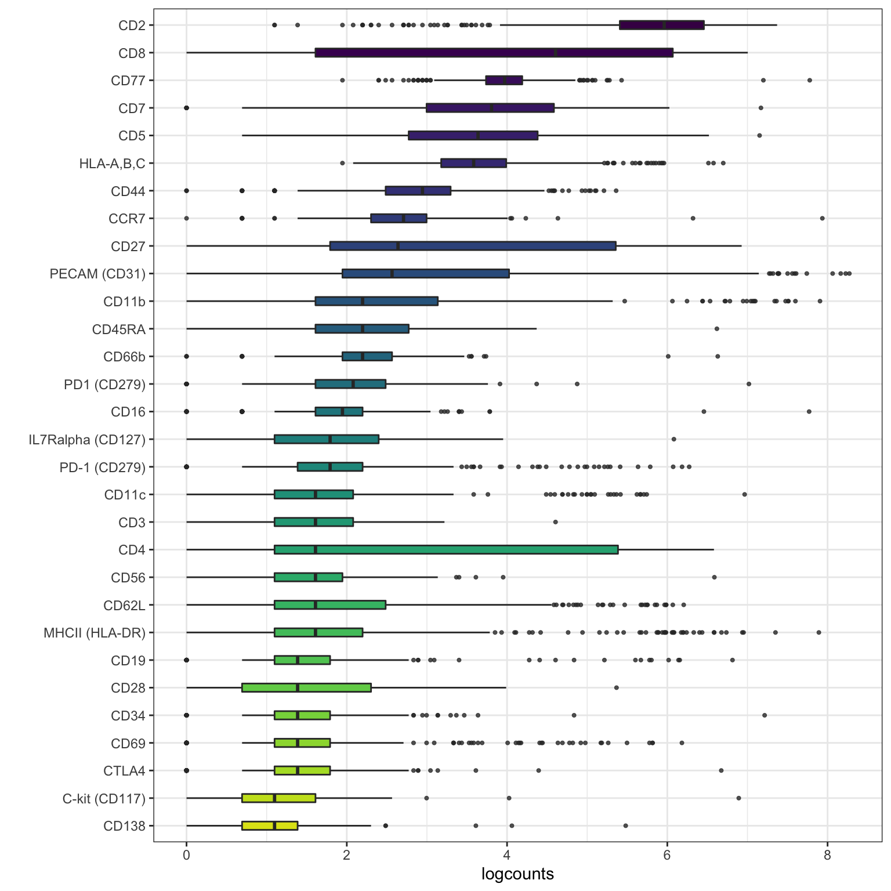
visualiseExprs(sce_citeseq, plot = "violin", group_by = "SNF_W_louvain", feature_subset = c("hg19_CD2", "hg19_CD4", "hg19_CD8A", "hg19_CD19"))
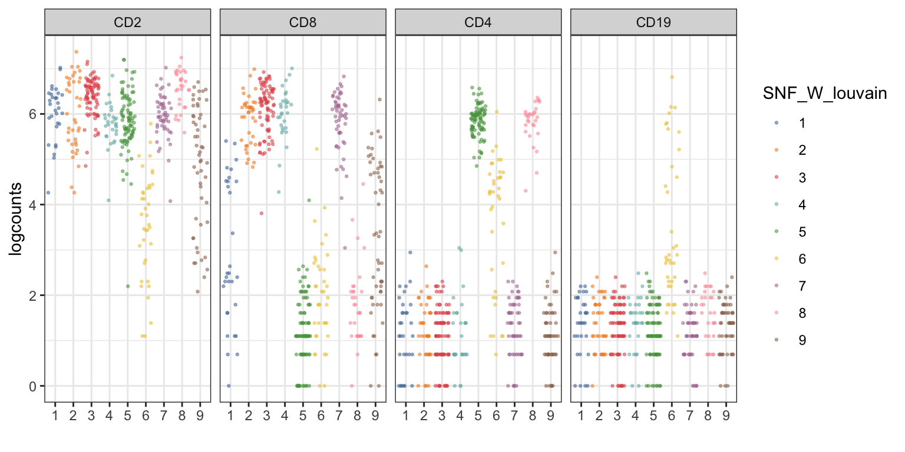
visualiseExprs(sce_citeseq, plot = "jitter", group_by = "SNF_W_louvain", feature_subset = c("hg19_CD2", "hg19_CD4", "hg19_CD8A", "hg19_CD19"))
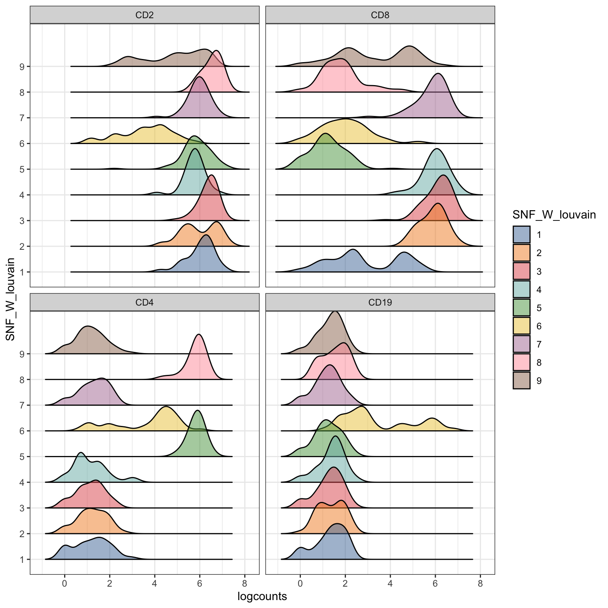
visualiseExprs(sce_citeseq, plot = "density", group_by = "SNF_W_louvain", feature_subset = c("hg19_CD2", "hg19_CD4", "hg19_CD8A", "hg19_CD19"))
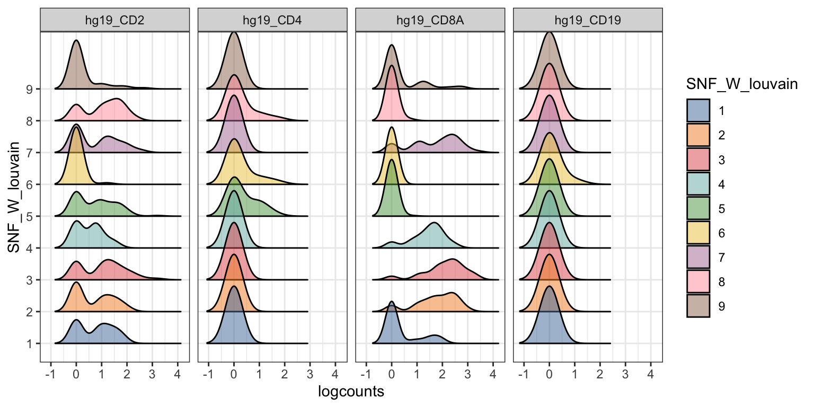
visualiseExprs(sce_citeseq, altExp_name = "ADT", n = 30) + coord_flip()
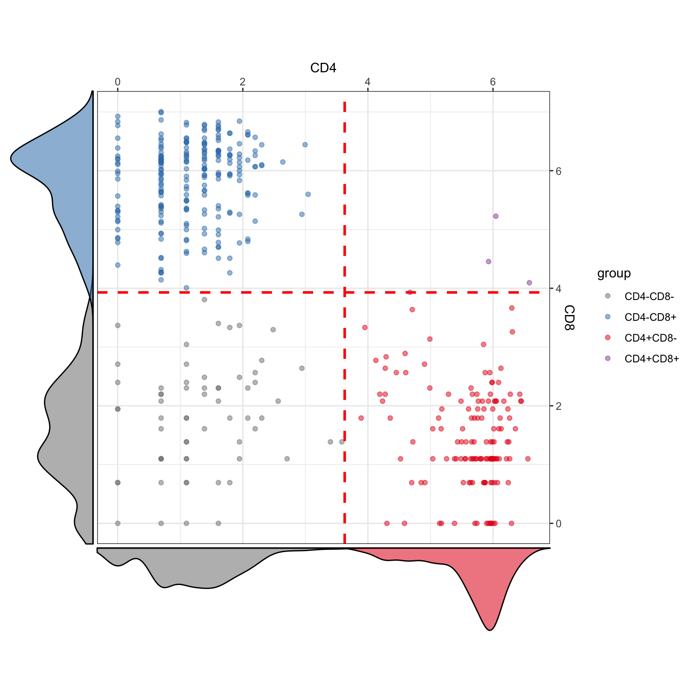
visualiseExprs(sce_citeseq, altExp_name = "ADT", group_by = "SNF_W_louvain", plot = "violin", n = 5)
visualiseExprs(sce_citeseq, altExp_name = "ADT", plot = "jitter", group_by = "SNF_W_louvain", feature_subset = c("CD2", "CD8", "CD4", "CD19"))
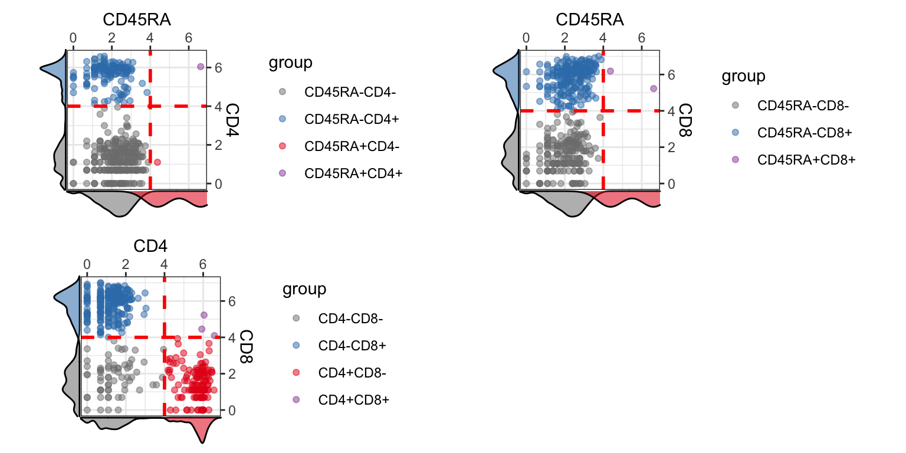
visualiseExprs(sce_citeseq, altExp_name = "ADT", plot = "density", group_by = "SNF_W_louvain", feature_subset = c("CD2", "CD8", "CD4", "CD19"))
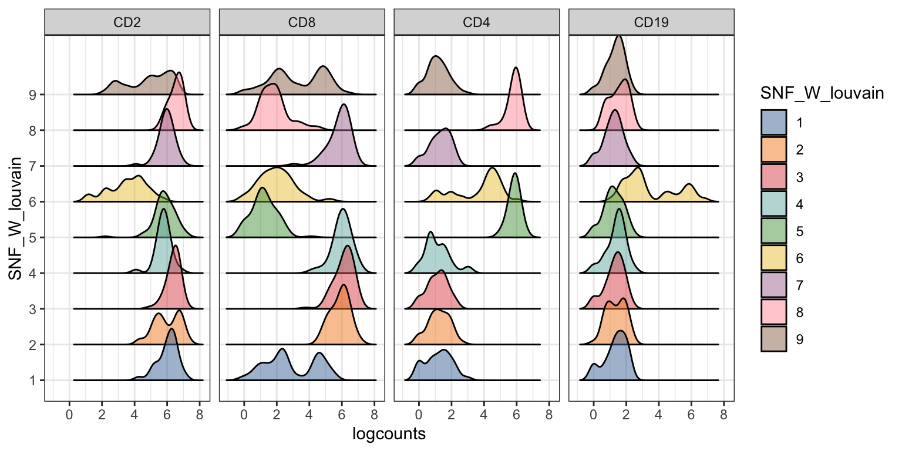
visualiseExprs(sce_citeseq, altExp_name = "ADT", plot = "pairwise", feature_subset = c("CD4", "CD8"))
## number of iterations= 9
## number of iterations= 17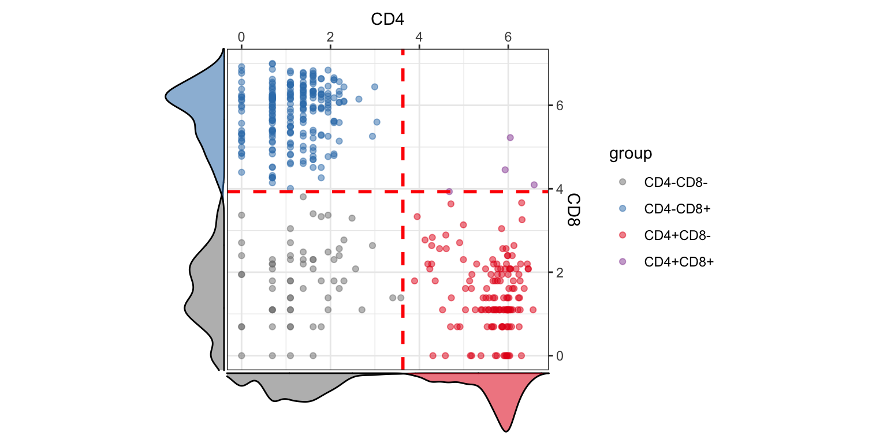
visualiseExprs(sce_citeseq, altExp_name = "ADT", plot = "pairwise", feature_subset = c("CD45RA", "CD4", "CD8"), threshold = rep(4, 3))
Perform DE Analysis with Wilcoxon Rank Sum test
For RNA expression
# DE will be performed for RNA if altExp_name = "none" sce_citeseq <- DEgenes(sce_citeseq, altExp_name = "none", group = sce_citeseq$SNF_W_louvain, return_all = TRUE, exprs_pct = 0.5) sce_citeseq <- selectDEgenes(sce_citeseq, altExp_name = "none") datatable(format(do.call(rbind, metadata(sce_citeseq)[["DE_res_RNA_filter"]]), digits = 2))
For ADT count
sce_citeseq <- DEgenes(sce_citeseq, altExp_name = "ADT", group = sce_citeseq$SNF_W_louvain, return_all = TRUE, exprs_pct = 0.5) sce_citeseq <- selectDEgenes(sce_citeseq, altExp_name = "ADT") datatable(format(do.call(rbind, metadata(sce_citeseq)[["DE_res_ADT_filter"]]), digits = 2))
Visualising DE Results
circlepackPlot
rna_DEgenes <- metadata(sce_citeseq)[["DE_res_RNA_filter"]] adt_DEgenes <- metadata(sce_citeseq)[["DE_res_ADT_filter"]] rna_DEgenes <- lapply(rna_DEgenes, function(x){ x$name <- gsub("hg19_", "", x$name) x}) DEbubblePlot(list(RNA = rna_DEgenes, ADT = adt_DEgenes))
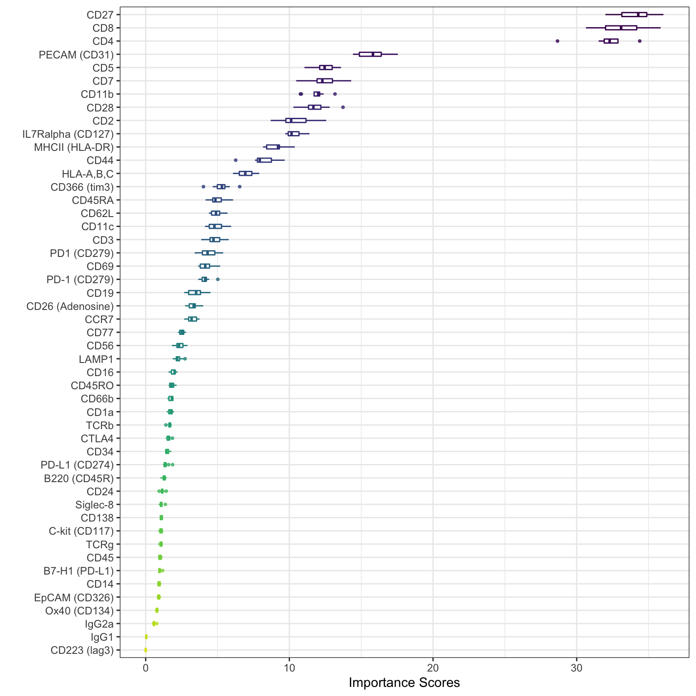
DEcomparisonPlot
rna_list <- c("hg19_CD4", "hg19_CD8A", "hg19_HLA-DRB1", "hg19_ITGAX", "hg19_NCAM1", "hg19_CD27", "hg19_CD19") adt_list <- c("CD4", "CD8", "MHCII (HLA-DR)", "CD11c", "CD56", "CD27", "CD19") rna_DEgenes_all <- metadata(sce_citeseq)[["DE_res_RNA"]] adt_DEgenes_all <- metadata(sce_citeseq)[["DE_res_ADT"]] feature_list <- list(RNA = rna_list, ADT = adt_list) de_list <- list(RNA = rna_DEgenes_all, ADT = adt_DEgenes_all) DEcomparisonPlot(de_list = de_list, feature_list = feature_list)
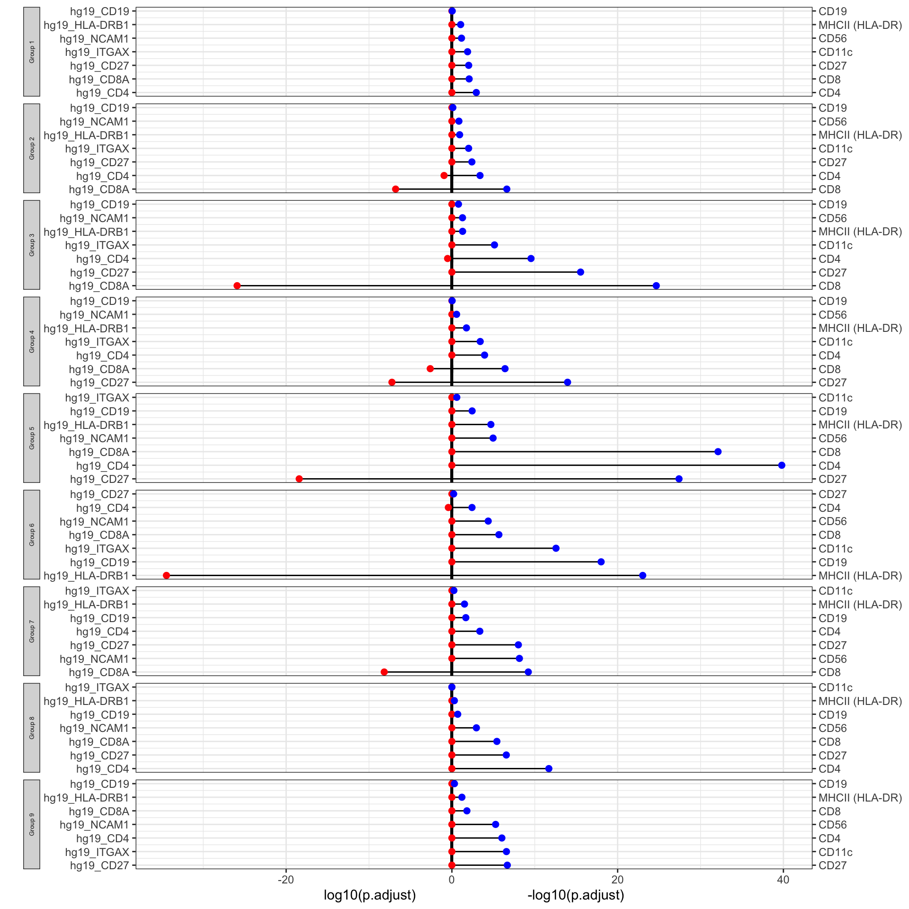
ADT Importance Evaluation
set.seed(2020) sce_citeseq <- importanceADT(sce_citeseq, group = sce_citeseq$SNF_W_louvain, subsample = TRUE) visImportance(sce_citeseq, plot = "boxplot")
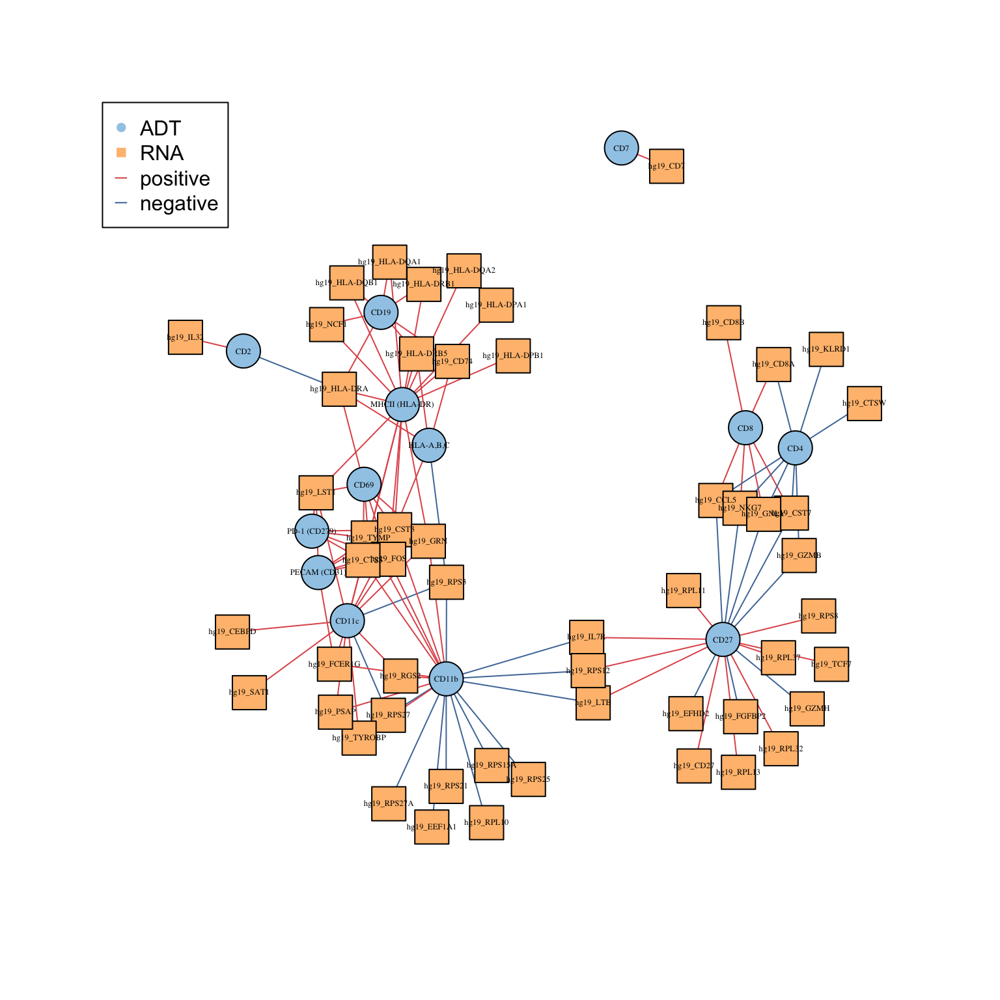
visImportance(sce_citeseq, plot = "heatmap")
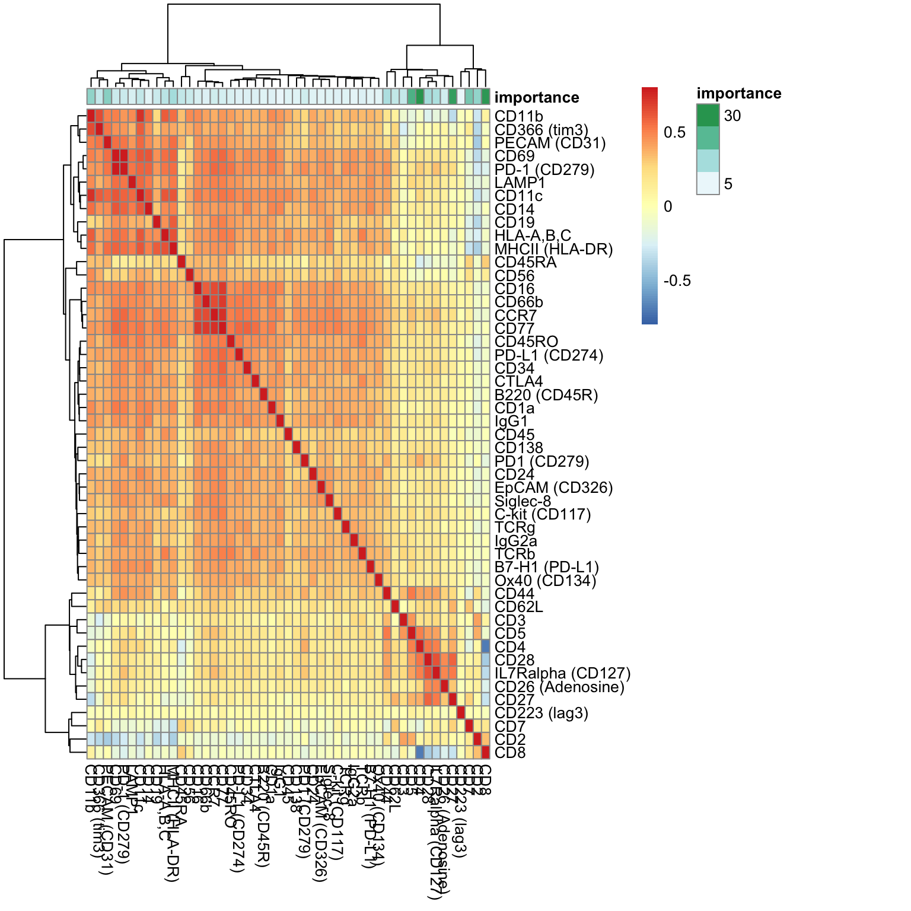
sort(metadata(sce_citeseq)[["importanceADT"]], decreasing = TRUE)[1:20]
## CD4 CD8 CD27 CD5
## 30.558333 29.224077 27.691326 22.097058
## CD7 PECAM (CD31) CD11b CD2
## 16.041289 13.495346 12.716874 12.241439
## MHCII (HLA-DR) CD28 CD44 IL7Ralpha (CD127)
## 10.332952 10.189411 9.006814 8.808518
## HLA-A,B,C CD62L CD11c CD45RA
## 6.961884 5.921209 5.678501 5.612525
## CD366 (tim3) CD3 CD56 PD-1 (CD279)
## 5.294986 5.263878 4.732472 4.427862Select the ADTs with scores greater than 5 and perform SNF again
## [1] "CD11b" "CD11c" "CD2"
## [4] "CD27" "CD28" "CD3"
## [7] "CD366 (tim3)" "CD4" "CD44"
## [10] "CD45RA" "CD5" "CD62L"
## [13] "CD7" "CD8" "HLA-A,B,C"
## [16] "IL7Ralpha (CD127)" "MHCII (HLA-DR)" "PECAM (CD31)"system.time(sce_citeseq <- CiteFuse(sce_citeseq, ADT_subset = subset_adt, metadata_names = c("W_SNF_adtSubset1", "W_ADT_adtSubset1", "W_RNA")))
## Calculating affinity matrix
## Performing SNF## user system elapsed
## 1.765 0.050 1.816SNF_W_clust_adtSubset1 <- spectralClustering(metadata(sce_citeseq)[["W_SNF_adtSubset1"]], K = 5)
## Computing Spectral Clustering
## Computing Diffusion Coordinates
## Used default value: 5 dimensionssce_citeseq$SNF_W_clust_adtSubset1 <- as.factor(SNF_W_clust_adtSubset1$labels) library(mclust) adjustedRandIndex(sce_citeseq$SNF_W_clust_adtSubset1, sce_citeseq$SNF_W_clust)
## [1] 0.9305236Gene - ADT network
RNA_feature_subset <- unique(as.character(unlist(lapply(rna_DEgenes_all, "[[", "name")))) ADT_feature_subset <- unique(as.character(unlist(lapply(adt_DEgenes_all, "[[", "name")))) geneADTnetwork(sce_citeseq, RNA_feature_subset = RNA_feature_subset, ADT_feature_subset = ADT_feature_subset, cor_method = "pearson", network_layout = igraph::layout_with_fr)

## IGRAPH 870354f UN-B 72 134 --
## + attr: name (v/c), label (v/c), class (v/c), type (v/l), shape (v/c),
## | color (v/c), size (v/n), label.cex (v/n), label.color (v/c), value
## | (e/n), color (e/c), weights (e/n)
## + edges from 870354f (vertex names):
## [1] RNA_hg19_IL7R --ADT_CD28
## [2] RNA_hg19_LTB --ADT_CD28
## [3] RNA_hg19_NKG7 --ADT_CD28
## [4] RNA_hg19_CST7 --ADT_CD28
## [5] RNA_hg19_GNLY --ADT_CD28
## [6] RNA_hg19_CCL5 --ADT_CD28
## + ... omitted several edgesRNA Ligand - ADT Receptor Analysis
## [,1] [,2]
## [1,] "hg19_IL17RA" "CD45"
## [2,] "hg19_FAS" "CD11b"
## [3,] "hg19_GZMK" "CD62L"
## [4,] "hg19_CD40LG" "CD11b"
## [5,] "hg19_FLT3LG" "CD62L"
## [6,] "hg19_GZMA" "CD19"sce_citeseq <- normaliseExprs(sce = sce_citeseq, altExp_name = "ADT", transform = "zi_minMax") sce_citeseq <- normaliseExprs(sce = sce_citeseq, altExp_name = "none", exprs_value = "logcounts", transform = "minMax") sce_citeseq <- ligandReceptorTest(sce = sce_citeseq, ligandReceptor_list = lr_pair_subset, cluster = sce_citeseq$SNF_W_louvain, RNA_exprs_value = "minMax", use_alt_exp = TRUE, altExp_name = "ADT", altExp_exprs_value = "zi_minMax", num_permute = 1000)
## 100 ......200 ......300 ......400 ......500 ......600 ......700 ......800 ......900 ......1000 ......visLigandReceptor(sce_citeseq, type = "pval_heatmap", receptor_type = "ADT")
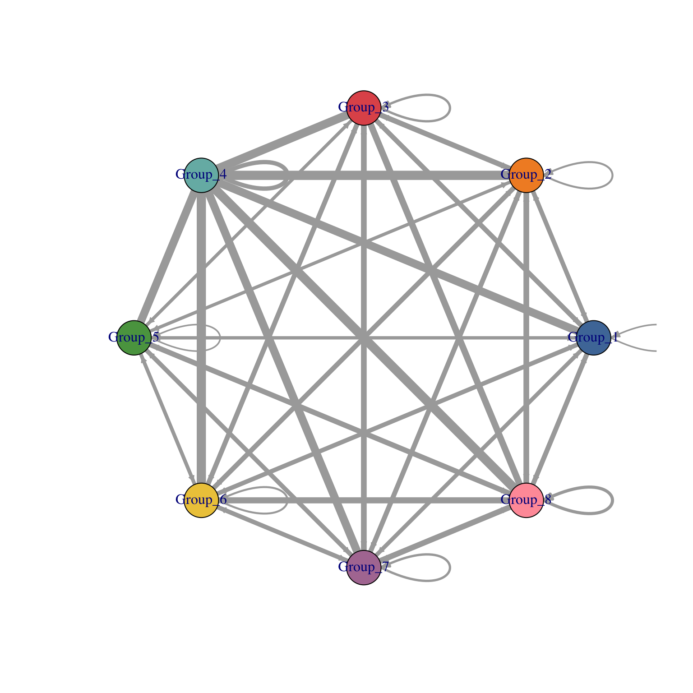
visLigandReceptor(sce_citeseq, type = "pval_dotplot", receptor_type = "ADT")
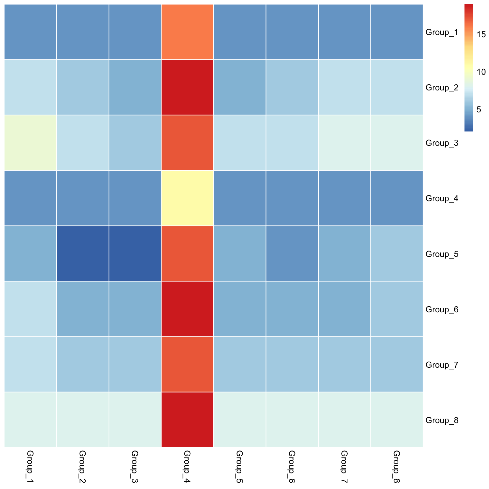
visLigandReceptor(sce_citeseq, type = "group_network", receptor_type = "ADT")
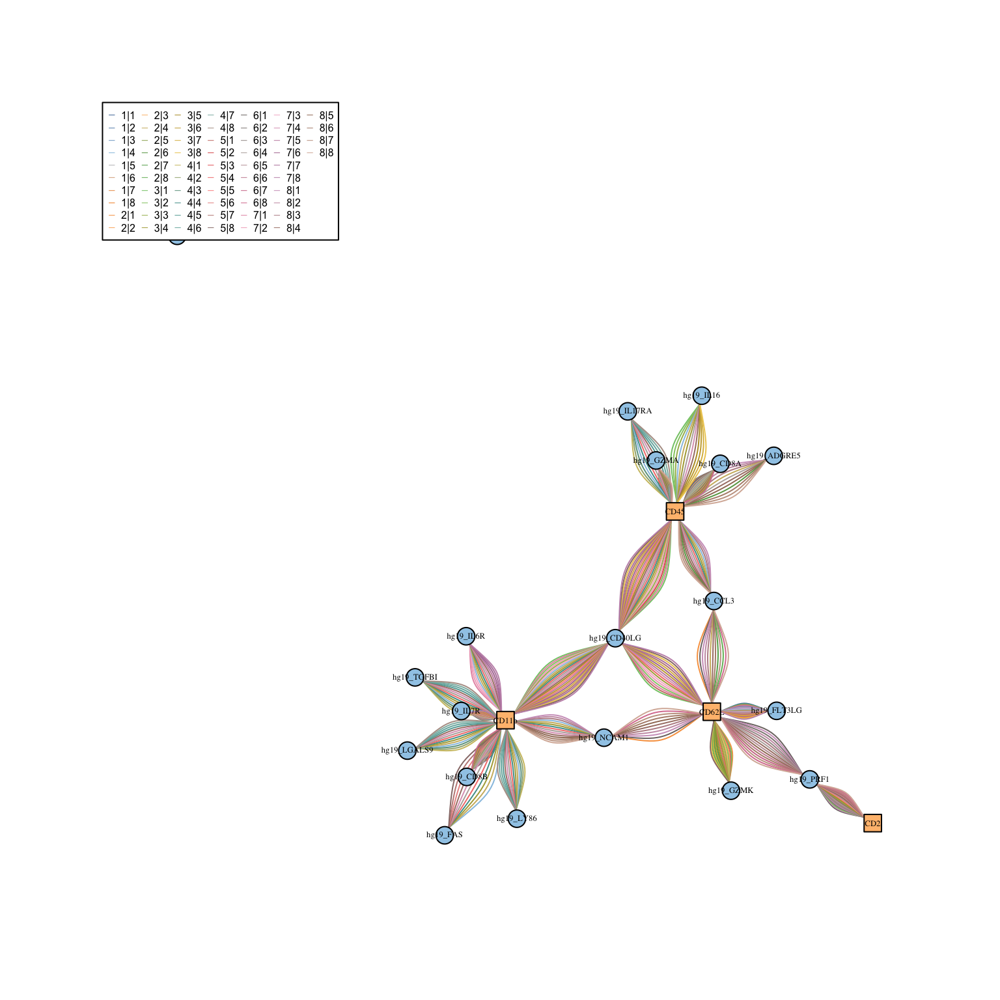
visLigandReceptor(sce_citeseq, type = "group_heatmap", receptor_type = "ADT")
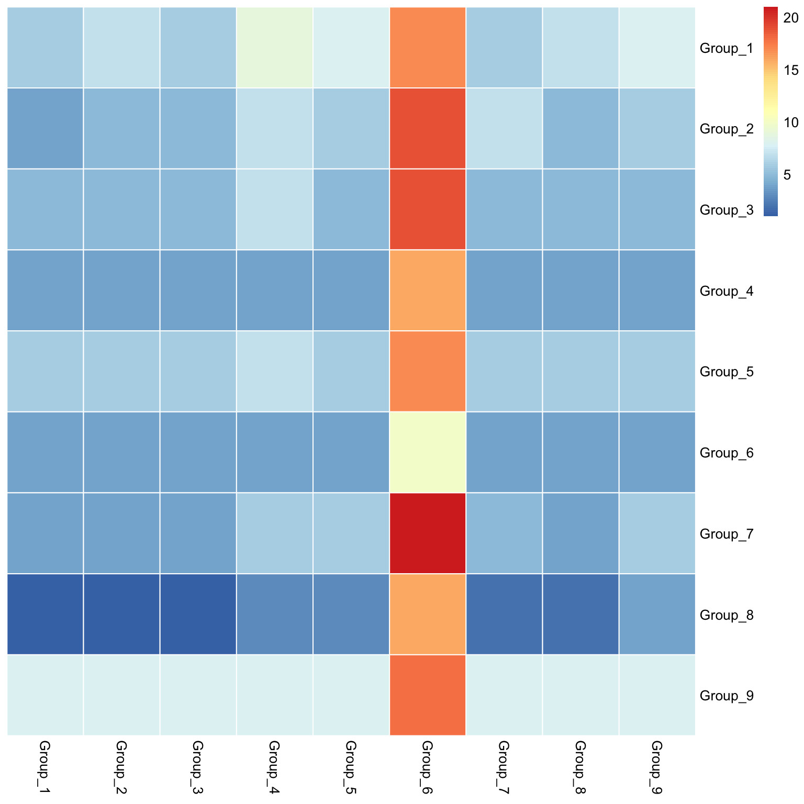
visLigandReceptor(sce_citeseq, type = "lr_network", receptor_type = "ADT")
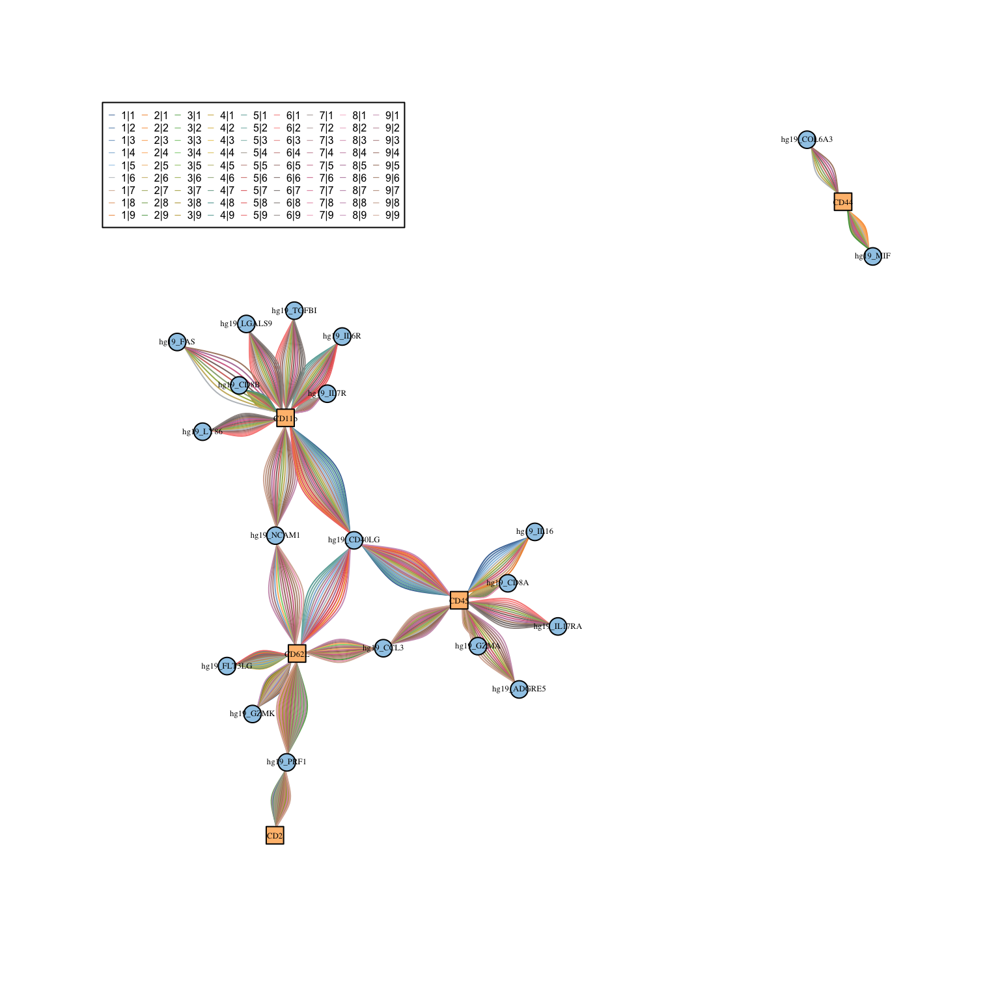
Between-sample Analysis
Here we will jointly analyse the current PBMC CITE-seq data, taken from healthy human donors, and another subset of CITE-seq data from patients with cutaneous T-cell lymphoma (CTCL), again from Mimitou et al. (2019). The data sce_ctcl_subset provided in our CiteFuse package already contain the clustering information.
data("sce_ctcl_subset", package = "CiteFuse")
To visualise and compare gene or protein expression data, we can use visualiseExprsList function.
visualiseExprsList(sce_list = list(control = sce_citeseq, ctcl = sce_ctcl_subset), plot = "boxplot", altExp_name = "none", exprs_value = "logcounts", feature_subset = c("hg19_S100A10", "hg19_CD8A"), group_by = c("SNF_W_louvain", "SNF_W_louvain"))
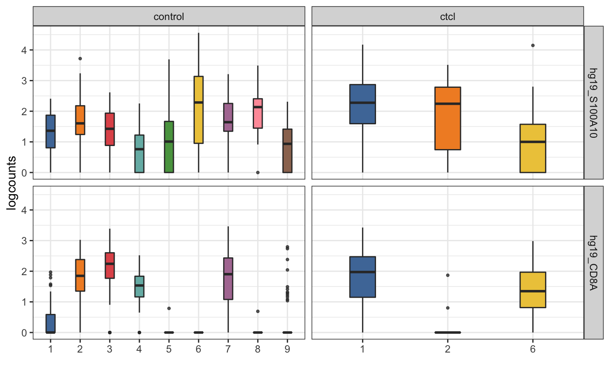
visualiseExprsList(sce_list = list(control = sce_citeseq, ctcl = sce_ctcl_subset), plot = "boxplot", altExp_name = "ADT", feature_subset = c("CD19", "CD8"), group_by = c("SNF_W_louvain", "SNF_W_louvain"))
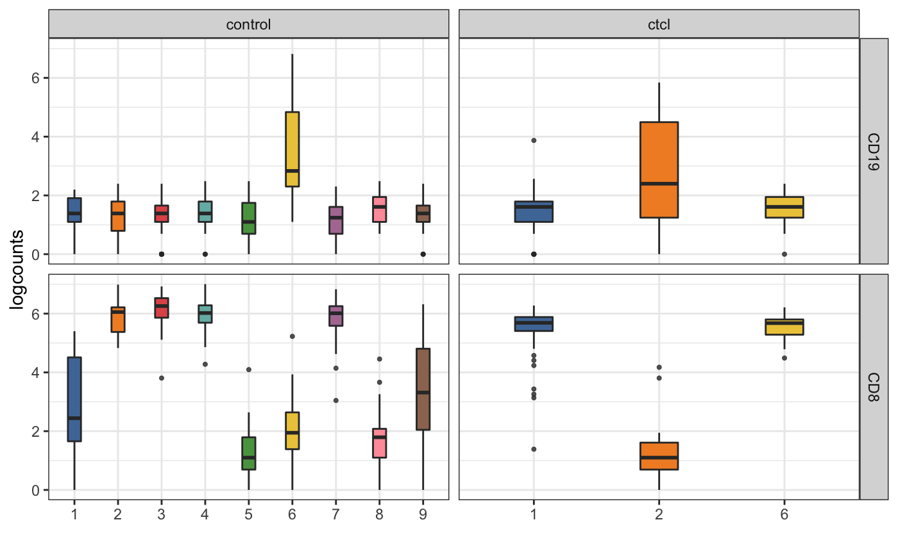
We can then perform differential expression analysis of the RNA expression level across the two clusters that have high CD19 expression in ADT.
de_res <- DEgenesCross(sce_list = list(control = sce_citeseq, ctcl = sce_ctcl_subset), colData_name = c("SNF_W_louvain", "SNF_W_louvain"), group_to_test = c("2", "6")) de_res_filter <- selectDEgenes(de_res = de_res) de_res_filter
## $control
## stats.W pval p.adjust meanExprs.1 meanExprs.2 meanPct.1
## hg19_NKG7 82.0 9.717299e-13 9.717299e-13 0.51066894 3.2333024 0.30232558
## hg19_CST7 138.0 5.875063e-12 5.875063e-12 0.22512314 2.2146495 0.13953488
## hg19_GNLY 186.0 8.935760e-12 8.935760e-12 0.07220401 2.7782587 0.02325581
## hg19_CCL5 124.0 2.418174e-11 2.418174e-11 1.04348029 3.7809281 0.37209302
## hg19_GZMH 258.0 1.807873e-10 1.807873e-10 0.00000000 1.4711399 0.00000000
## hg19_ITGB2 210.0 4.203966e-09 4.203966e-09 0.44185664 1.7346818 0.44186047
## hg19_KLRD1 322.5 5.000482e-08 5.000482e-08 0.09327555 1.0358615 0.09302326
## hg19_GZMA 284.5 5.732252e-08 5.732252e-08 0.32515702 1.5433119 0.18604651
## hg19_ZEB2 387.0 7.878997e-08 7.878997e-08 0.00000000 0.8211807 0.00000000
## hg19_CD99 274.0 1.679625e-07 1.679625e-07 0.58551572 1.5699157 0.46511628
## meanPct.2 meanDiff pctDiff name group
## hg19_NKG7 1.0000000 0.6976744 0.6976744 hg19_NKG7 control
## hg19_CST7 0.8947368 0.7552020 0.7552020 hg19_CST7 control
## hg19_GNLY 0.7894737 0.7662179 0.7662179 hg19_GNLY control
## hg19_CCL5 1.0000000 0.6279070 0.6279070 hg19_CCL5 control
## hg19_GZMH 0.6842105 0.6842105 0.6842105 hg19_GZMH control
## hg19_ITGB2 0.8684211 0.4265606 0.4265606 hg19_ITGB2 control
## hg19_KLRD1 0.6578947 0.5648715 0.5648715 hg19_KLRD1 control
## hg19_GZMA 0.8157895 0.6297430 0.6297430 hg19_GZMA control
## hg19_ZEB2 0.5263158 0.5263158 0.5263158 hg19_ZEB2 control
## hg19_CD99 0.8947368 0.4296206 0.4296206 hg19_CD99 control
##
## $ctcl
## stats.W pval p.adjust meanExprs.1 meanExprs.2
## hg19_RPS26 0.0 1.087530e-14 1.087530e-14 1.42819970 5.072471
## hg19_LTB 235.0 1.478865e-08 1.478865e-08 0.48566164 1.978730
## hg19_SELL 298.5 3.618421e-08 3.618421e-08 0.10674144 1.152572
## hg19_LEPROTL1 268.0 9.163954e-08 9.163954e-08 0.37427389 1.300745
## hg19_NOSIP 306.0 2.589055e-07 2.589055e-07 0.23412389 1.157235
## hg19_LINC02446 352.0 3.887845e-07 3.887845e-07 0.09889831 1.004083
## hg19_FOS 353.5 5.438707e-07 5.438707e-07 0.14088922 1.125337
## hg19_TMEM123 331.0 1.090629e-06 1.090629e-06 0.26112624 1.012034
## hg19_LDHB 325.0 2.344648e-06 2.344648e-06 0.70148411 1.588459
## hg19_NPM1 323.0 2.836125e-06 2.836125e-06 1.24903807 2.202268
## meanPct.1 meanPct.2 meanDiff pctDiff name group
## hg19_RPS26 0.84210526 1.0000000 0.1578947 0.1578947 hg19_RPS26 ctcl
## hg19_LTB 0.28947368 0.9069767 0.6175031 0.6175031 hg19_LTB ctcl
## hg19_SELL 0.07894737 0.6976744 0.6187271 0.6187271 hg19_SELL ctcl
## hg19_LEPROTL1 0.28947368 0.9069767 0.6175031 0.6175031 hg19_LEPROTL1 ctcl
## hg19_NOSIP 0.21052632 0.7674419 0.5569155 0.5569155 hg19_NOSIP ctcl
## hg19_LINC02446 0.07894737 0.6279070 0.5489596 0.5489596 hg19_LINC02446 ctcl
## hg19_FOS 0.07894737 0.6511628 0.5722154 0.5722154 hg19_FOS ctcl
## hg19_TMEM123 0.23684211 0.7674419 0.5305998 0.5305998 hg19_TMEM123 ctcl
## hg19_LDHB 0.50000000 0.8604651 0.3604651 0.3604651 hg19_LDHB ctcl
## hg19_NPM1 0.68421053 0.9534884 0.2692778 0.2692778 hg19_NPM1 ctclSessionInfo
## R Under development (unstable) (2020-03-25 r78063)
## Platform: x86_64-apple-darwin15.6.0 (64-bit)
## Running under: macOS Catalina 10.15.4
##
## Matrix products: default
## BLAS: /Library/Frameworks/R.framework/Versions/4.0/Resources/lib/libRblas.0.dylib
## LAPACK: /Library/Frameworks/R.framework/Versions/4.0/Resources/lib/libRlapack.dylib
##
## locale:
## [1] en_AU.UTF-8/en_AU.UTF-8/en_AU.UTF-8/C/en_AU.UTF-8/en_AU.UTF-8
##
## attached base packages:
## [1] parallel stats4 stats graphics grDevices utils datasets
## [8] methods base
##
## other attached packages:
## [1] mclust_5.4.6 gridExtra_2.3
## [3] DT_0.13 scater_1.15.29
## [5] ggplot2_3.3.0 SingleCellExperiment_1.9.3
## [7] SummarizedExperiment_1.17.5 DelayedArray_0.13.12
## [9] matrixStats_0.56.0 Biobase_2.47.3
## [11] GenomicRanges_1.39.3 GenomeInfoDb_1.23.16
## [13] IRanges_2.21.8 S4Vectors_0.25.15
## [15] BiocGenerics_0.33.3 CiteFuse_0.99.6
## [17] BiocStyle_2.15.6
##
## loaded via a namespace (and not attached):
## [1] ggbeeswarm_0.6.0 Rtsne_0.15 colorspace_1.4-1
## [4] RcppEigen_0.3.3.7.0 ellipsis_0.3.0 ggridges_0.5.2
## [7] rprojroot_1.3-2 XVector_0.27.2 BiocNeighbors_1.5.2
## [10] fs_1.4.1 rstudioapi_0.11 farver_2.0.3
## [13] graphlayouts_0.6.0 ggrepel_0.8.2 RSpectra_0.16-0
## [16] fansi_0.4.1 splines_4.0.0 knitr_1.28
## [19] heatmap.plus_1.3 polyclip_1.10-0 jsonlite_1.6.1
## [22] alluvial_0.1-2 kernlab_0.9-29 uwot_0.1.8
## [25] pheatmap_1.0.12 ggforce_0.3.1 ExPosition_2.8.23
## [28] BiocManager_1.30.10 compiler_4.0.0 dqrng_0.2.1
## [31] prettyGraphs_2.1.6 backports_1.1.6 assertthat_0.2.1
## [34] Matrix_1.2-18 limma_3.43.5 cli_2.0.2
## [37] tweenr_1.0.1 BiocSingular_1.3.2 htmltools_0.4.0
## [40] tools_4.0.0 rsvd_1.0.3 igraph_1.2.5
## [43] gtable_0.3.0 glue_1.4.0 GenomeInfoDbData_1.2.2
## [46] reshape2_1.4.4 dplyr_0.8.5 Rcpp_1.0.4.6
## [49] pkgdown_1.5.1 vctrs_0.2.4 crosstalk_1.1.0.1
## [52] DelayedMatrixStats_1.9.1 ggraph_2.0.2 xfun_0.12
## [55] stringr_1.4.0 lifecycle_0.2.0 irlba_2.3.3
## [58] statmod_1.4.34 edgeR_3.29.1 zlibbioc_1.33.1
## [61] MASS_7.3-51.5 scales_1.1.0 tidygraph_1.1.2
## [64] rhdf5_2.31.10 RColorBrewer_1.1-2 SNFtool_2.3.0
## [67] yaml_2.2.1 memoise_1.1.0 segmented_1.1-0
## [70] stringi_1.4.6 desc_1.2.0 randomForest_4.6-14
## [73] scran_1.15.26 BiocParallel_1.21.2 rlang_0.4.5
## [76] pkgconfig_2.0.3 bitops_1.0-6 evaluate_0.14
## [79] lattice_0.20-41 purrr_0.3.3 Rhdf5lib_1.9.2
## [82] labeling_0.3 htmlwidgets_1.5.1 cowplot_1.0.0
## [85] tidyselect_1.0.0 plyr_1.8.6 magrittr_1.5
## [88] bookdown_0.18 R6_2.4.1 withr_2.1.2
## [91] pillar_1.4.3 mixtools_1.2.0 survival_3.1-12
## [94] RCurl_1.98-1.1 tibble_3.0.0 crayon_1.3.4
## [97] rmarkdown_2.1 viridis_0.5.1 locfit_1.5-9.4
## [100] grid_4.0.0 FNN_1.1.3 propr_4.2.6
## [103] digest_0.6.25 tidyr_1.0.2 dbscan_1.1-5
## [106] munsell_0.5.0 beeswarm_0.2.3 viridisLite_0.3.0
## [109] vipor_0.4.5